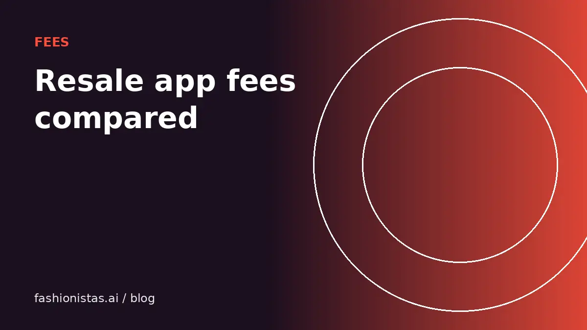

Poshmark vs Depop vs Mercari vs Vinted: every seller fee, compared

The same $30 jacket can put $24 or $30 in your pocket depending on which app it sells on. Fees are the one part of reselling you can calculate before you list, so here is every major US resale app side by side, with the exact rules from each company's own help pages and worked examples at three price points.
The short answer
If you only remember one thing: Vinted charges US sellers nothing, Depop charges only payment processing, Mercari takes a flat 10%, and Poshmark takes 20% on anything $15 or more. eBay and Grailed sit in between and depend on category and price.
That does not automatically make Vinted the best place to sell. Fees are one input. The others are how many buyers are looking for your kind of item on that app, how fast it sells, and how much you can charge there. A designer bag that sells for $400 on Poshmark in a week may sit for two months on an app where shoppers expect $15 tops. Use the fee table to know your floor, then pick the app where your item's buyers actually shop.
Last checked Oct 2026 against each marketplace's official fee page. Fees change, so confirm the number on the sale screen before you price to the penny.
Fee table for US sellers
| App | Seller fee | Payment processing | Who pays shipping |
|---|---|---|---|
| Poshmark | $2.95 flat under $15; 20% at $15 and up | Included | Buyer, on a prepaid label (up to 5 lb) |
| Depop | 0% selling fee for US sellers | 3.3% + $0.45 on item, shipping and tax | Set by seller, usually buyer |
| Mercari | 10% of item price plus buyer-paid shipping | None extra on new listings | Buyer or seller, your choice |
| Vinted | No seller fee | None for sellers; buyer pays a Vinted fee (usually 5% + $0.70) | Buyer |
| eBay (clothing, no Store) | 13.6% of the total sale up to $7,500, plus $0.40 per order ($0.30 at $10 or less) | Included | Usually buyer, set by seller |
| eBay sneakers $150+ | 8%, no per-order fee | Included | Usually buyer |
| eBay handbags | 15% up to $2,000; 9% above | Included | Usually buyer |
| Grailed | 6% (min $1.99) under $120; 9% at $120 and up | 3.49% + $0.49 (US, Stripe) | Usually buyer |
| Etsy | 6.5% transaction fee plus $0.20 listing fee | 3% + $0.25 (US) | Usually buyer |
A few rules in that table catch people out. eBay's percentage is charged on the total amount of the sale, which includes the shipping you charge and the sales tax. Mercari's 10% also applies to buyer-paid shipping. Depop's processing fee applies to tax and shipping as well. Poshmark's 20% applies to the item price only, because the buyer's shipping payment goes straight to the label.
What you keep at $10, $30 and $100
Here is the take-home on a plain clothing item, assuming the buyer pays shipping, no promotions, and ignoring sales tax so the numbers are comparable. Your real payout will be a little lower on apps that charge on tax.
| Sale price | Poshmark | Depop | Mercari | Vinted | eBay (no Store) |
|---|---|---|---|---|---|
| $10 | $7.05 | $9.22 | $9.00 | $10.00 | $8.34 |
| $30 | $24.00 | $28.56 | $27.00 | $30.00 | $25.52 |
| $100 | $80.00 | $96.25 | $90.00 | $100.00 | $86.00 |
Two things jump out. First, Poshmark's $2.95 minimum makes it expensive for cheap items: on a $10 sale it takes almost 30%. That is why experienced Poshmark sellers bundle low-priced pieces or list them elsewhere. Second, on a $100 item the gap between apps is $20, which is real money if you sell a lot. If the same item would sell at the same price everywhere, the cheaper app wins.
The eBay figures include the per-order fee. On eBay, shipping you charge the buyer also attracts the 13.6%, so a $30 item with $8 shipping costs about $5.57 in fees, not $4.48.
Optional costs that change the math
Every app has paid extras. None are required, but sellers often switch them on without doing the arithmetic.
- Depop Boosted Listings: 12% of the item price on boosted sales in the US for listings since March 23, 2026, on top of processing. A boosted $50 sale costs about $8.10 instead of $2.10.
- Poshmark shipping discounts: when you send an Offer to Likers with discounted shipping, the discount comes out of your earnings.
- Mercari promotions and Instant Pay: direct deposit is free once a day; Instant Pay costs $3 per withdrawal.
- eBay Promoted Listings: an ad rate you choose, charged when a promoted listing sells. A 5% ad rate on a 13.6% category means you are paying close to 19%.
- Vinted Bumps: a paid boost lasting 3 or 7 days, priced by item and reach.
- Etsy Offsite Ads: a percentage of sales that come from Etsy's ads, mandatory for shops above a sales threshold.
A simple test: a promotion is worth it only if it makes the item sell meaningfully faster or at a higher price than it would otherwise. If you have 200 listings and a few sell each day anyway, boosting all of them mostly pays the app for sales you would have had.
Which app is cheapest for what you sell
Fees should break ties, not make the decision. Here is how the apps line up by item type for most US sellers:
- Cheap basics under $15: Vinted or Depop. Poshmark's minimum fee eats too much. Mercari's 10% is fair if your buyers are there.
- Mall brands and everyday womenswear ($20 to $80): Poshmark has the deepest pool of buyers for this. The 20% fee hurts, but quick sales at full price often beat slower sales elsewhere. Crosslist to Mercari and Depop to catch both.
- Y2K, vintage and streetwear for under-30 shoppers: Depop. Low fees and the right audience.
- Menswear, designer and archive pieces: Grailed, where buyers expect to pay more for brands like Rick Owens, Our Legacy or Visvim.
- Sneakers over $150: eBay's 8% rate is among the lowest for that price band, and eBay's authentication program covers qualifying pairs.
- Handmade or upcycled pieces and vintage over 20 years old: Etsy, which restricts most other resale.
Most sellers end up on two to four apps. That is what crosslisting is for: one set of photos, many shop windows.
How to price with fees in mind
Work backwards from what you want to keep. If you want $25 in your pocket from a Poshmark sale, you need to sell at $31.25 or higher, so a list price around $38 leaves room for an offer. On Mercari, the same $25 needs a $27.78 sale. On Depop, roughly $26.30.
Our pricing guide covers how to find the market price first. Once you know it, add the fee on top for each app rather than listing the same number everywhere. Many sellers deliberately list a little higher on Poshmark, because offers are part of the culture there.
When you create a listing in the fashionistas.ai listing tool, the take-home for each shop is shown next to the price, so you do not have to run the math by hand. If you are buying, those same fees explain why the same item often costs more on one app than another.
Sources
Every number above comes from the marketplace's own pages, checked Oct 2026: Poshmark's fee policy, Depop Help Centre "Seller fees and charges" and "Boosted Listings Policy", Mercari Help "Fees on Mercari", Vinted's US price list, eBay "Selling fees", Grailed support "What are the fees?", and Etsy's Fees and Payments Policy. Marketplaces change fees with a few weeks' notice, so check the sale screen if the number really matters.
FAQ
Which resale app has the lowest fees for sellers?
In the US, Vinted charges sellers no fee at all, because the buyer pays a Vinted fee at checkout. Depop is next, with no selling fee and only 3.3% + $0.45 processing. Last checked Oct 2026.
Does Poshmark still take 20%?
Yes. Poshmark charges a flat $2.95 on sales under $15 and 20% on sales of $15 or more. Payment processing is included in that fee.
Did Mercari bring back seller fees?
Yes. Since January 6, 2025, Mercari charges sellers a flat 10% on the item price plus buyer-paid shipping, and buyers pay a separate Buyer Protection fee.
Does eBay charge fees on shipping?
Yes. eBay's final value fee is a percentage of the total amount of the sale, which includes shipping and handling and sales tax.
Is Depop free to sell on?
Depop has no selling fee for US, UK and Australian sellers, but US sellers pay a 3.3% + $0.45 payment processing fee per sale, and boosted sales cost an extra 12%.